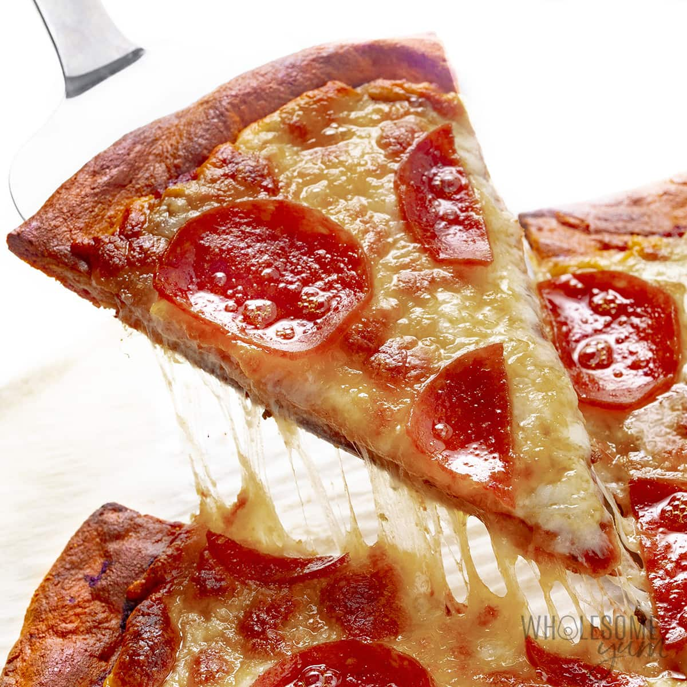

What is Keto Pizza?
Fathead pizza dough makes the BEST low carb keto pizza
crust recipe with
only 7 ingredients. Crispy, chewy, and ready in 20 minutes!
Ingredients
- 3 1/2 cups shredded mozzarella cheese
- 2 tablelspoons cream cheese
- 1 egg
- 3/4 cup almond flour
- 1 teaspoon italian seasoning
-
1/3 cup low sugar marinara sauce (Rao's Marinara
is good)
- 1/4 cup pepperoni
Directions
- Preheat oven to 425 degrees
-
Add 2 cups of mozzarella and cream cheese to a microwave safe bowl and
microwave for 1 minute. Stir to combine and return to microwave until
cheese has melted, about 30 more seconds.
- Stir in the almond flour, egg, and Italian seasoning to combine.
-
Place the dough on a large sheet of parchment paper. Top with a second
sheet of parchment.
- Roll the dough out into a 12 inch diameter circle.
-
Remove the top piece of parchment and transfer the bottom sheet with the
dough on it to a pizza pan.
- Bake for 10 minutes or until crust is lightly golden.
-
For an extra sturdy crust that holds up well, carefully flip the crust
over and bake for 3 more minutes.
-
Remove crust from the oven. Spread the marinara over the pizza crust and
sprinkle with the remaining 1 1/2 cups mozzarella. Arrange pepperoni
evenly over the top.
-
Bake the pizza for another 10 minutes. Cool 5 minutes before slicing and
serving.
Back to top
Back home